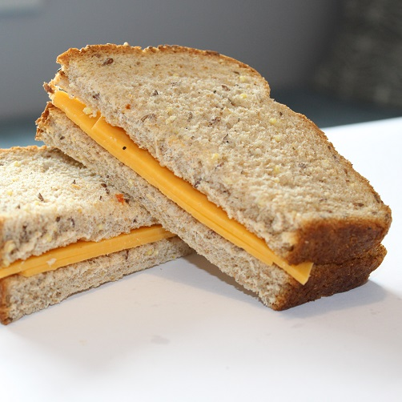

Cheese Sandwich

Description
A plain cheese sandwich with wholemeal bread
Ingredients
- 2 slices wholemeal bread
- 1 tbsp good quality mayonnaise
- 40g Cheddar cheese, sliced
Steps
- Spread mayonnaise on one side of each piece of bread
- Layer cheese across one piece of bread, on top of mayo
- Place the second piece of bread on top, mayo side down